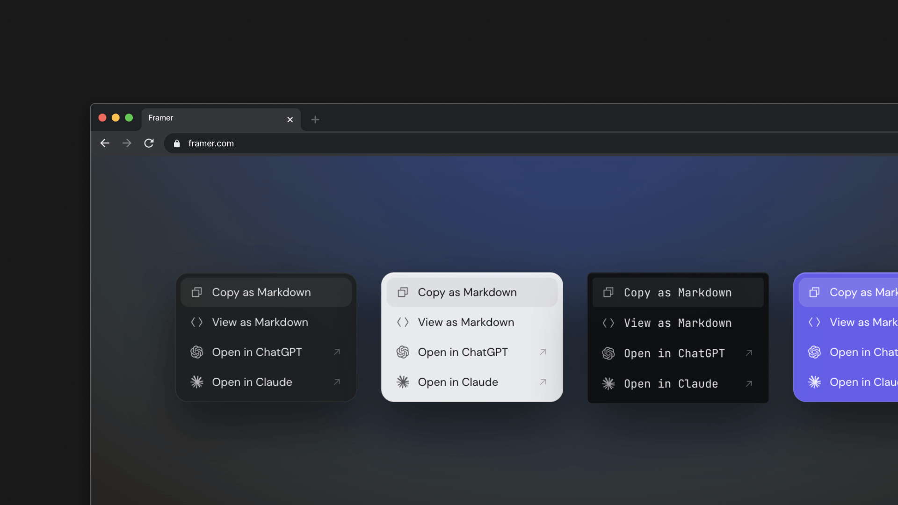
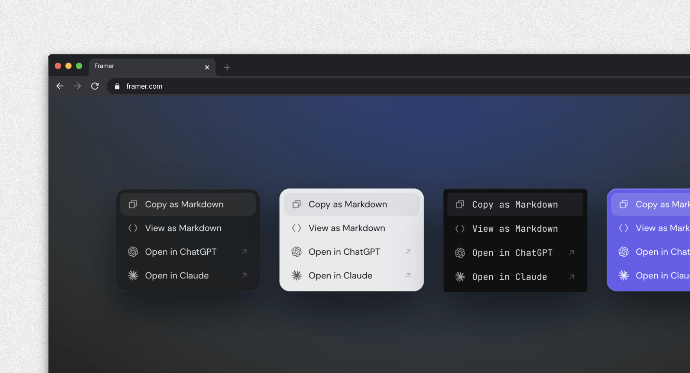

Copy as Markdown
The readable part of the page, stripped of nav and clutter, lands on the clipboard as clean Markdown.

Drop in one script and readers can turn your page into clean Markdown, or open it in ChatGPT, Claude, Perplexity, Grok — or your own endpoint.
Your readers already ask AI about your page.
Today they paste a broken copy, or a link the model can't read. Copy2LLM hands over your real content, clean, in one click.
One click copies the whole page, already clean.
Nav, banners and ads are stripped first.
Opens ChatGPT, Claude, Perplexity or Grok with the page loaded.
A reader clicks once and gets a small menu — ChatGPT, Claude, Perplexity, Grok, or any endpoint you add. Every option runs in their browser, with no sign-in and no detour.
The readable part of the page, stripped of nav and clutter, lands on the clipboard as clean Markdown.

Read the Markdown in an overlay first.
One click hands your page to ChatGPT, Claude, Perplexity or Grok — already in context. No paste, no sign-in, no detour.
Point readers at an internal or self-hosted chat — any URL that takes the page as a prompt.
Position, theme, colors, shape, font and label — tune the button to fit your site, no CSS required.
It all happens in the reader's browser. Your page never reaches a server of ours — we run none in the loop — and every line is open source you can audit.
Tweak it below and the snippet updates as you go — the live button in the corner of this page changes with it.
Fastest: install the agent skill and let your coding agent wire it in —

Get official plugin
Just need the Markdown? npm i copy2llm-core gives
you
extract(document)
with no UI.
No backend to run, no styles to fight, nothing for a reader to sign up for.